地政学
ビシュケクはカザフスタン国境に近いチュイ谷の首都です。ロシア、中国、中央アジア、トルコ語圏、欧米支援の利害が交差し、基地、移民、通商、山岳水資源、国内政治の揺れが街の空気を変えます。生活にも直結します。
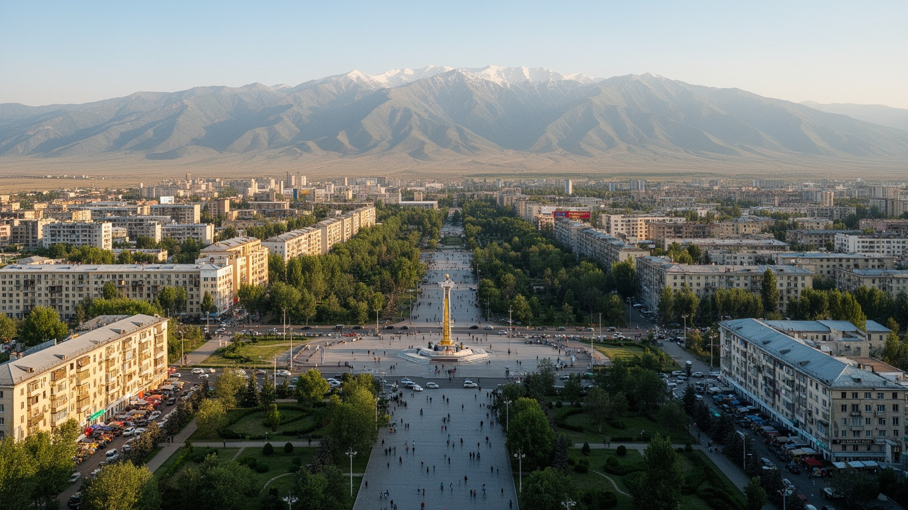
🇰🇬 キルギス共和国 / 首都 / World City Atlas
チュイ谷の南端、天山山脈を背に広がる首都です。国家政治、ソ連期の街路、バザール経済、ロシア語とキルギス語、山への休日、移民と送金、郊外化が近い距離で重なります。
都市の骨格
ビシュケクは山を背にした低層の碁盤目都市です。官庁、大学、劇場、バザール、ソ連期の団地、郊外住宅がチュイ谷に広がり、カザフスタン国境、山岳観光、送金経済、国内政治の動きが街のリズムを作ります。
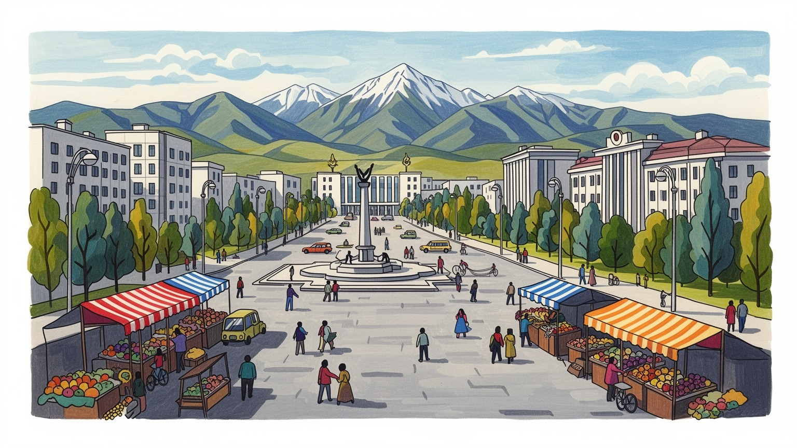
ビシュケクはカザフスタン国境に近いチュイ谷の首都です。ロシア、中国、中央アジア、トルコ語圏、欧米支援の利害が交差し、基地、移民、通商、山岳水資源、国内政治の揺れが街の空気を変えます。生活にも直結します。
行政、卸売市場、建設、教育、運輸、飲食、小売、観光が雇用を作ります。地方出身者と帰国移民が多く、ロシアなどへの出稼ぎ送金、非公式商売、住宅建設、若者の賃金が都市経済を支えます。物価の変化も家計に響きます。
キルギス語とロシア語が併用され、イスラム、正教、世俗的なソ連文化、遊牧の記憶、現代音楽が混ざります。マナス叙事詩、帽子、馬、茶、劇場、大学、家族行事が首都の文化を作ります。多民族の記憶も残ります。
住民は渋滞、暖房、空気汚染、家賃、水、学校、バザールの価格を調整しながら暮らします。旅行者はアラトー広場、公園、オシュ・バザール、博物館、アラ・アルチャ国立公園から、山麓都市の近さを体験しますね。
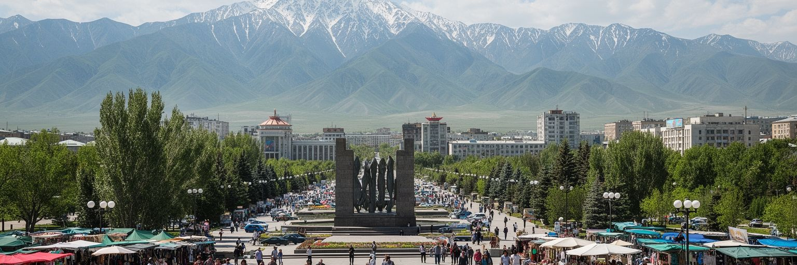
ビシュケクは、キルギス・アラトー山脈の北麓とチュイ谷の平野が出会う場所にあります。南の山は都市の眺めを決めるだけでなく、川、水路、雪解け水、週末の行楽、気候の変化を街へ運びます。北へ進めばカザフスタン国境が近く、道路と物流はアルマトイ方面へ伸びます。この地理は、ビシュケクを内陸国の奥まった首都ではなく、中央アジア北部の移動と商取引の結節点にしています。街路は広く、並木と灌漑水路が多く、夏の乾いた暑さをやわらげますが、冬は盆地のような大気条件で煙と排ガスが滞りやすくなります。山を背景にした都市の美しさと、暖房、交通、排水、郊外化の問題は切り離せません。チュイ谷の農地、郊外住宅、幹線道路、山麓の保養地を同時に見ると、首都は自然に抱かれた小都市ではなく、水と土地の管理を必要とする成長都市です。ビシュケクの重要性は、国家の官庁だけでなく、山から来る水、谷を走る物流、人びとの移動がここで交差する点にあります。山が近いことは誇りであり、同時に都市計画の責任でもあります。新しい住宅や道路が谷へ広がるほど、農地、河川、緑地、公共交通をどこまで守るかが問われます。山を眺めるだけでなく、山から来る水と風を都市の資産として扱えるかが、次のビシュケクを決めます。谷の端にある首都だからこそ、広がり方の選択が国土の使い方まで示します。
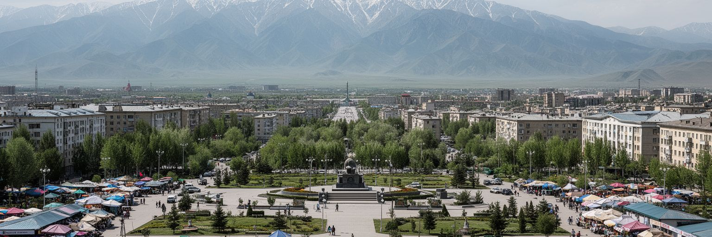
ビシュケクの中心には、アラトー広場、政府庁舎、議会、博物館、記念碑が集まり、国家の象徴空間を作っています。キルギスは独立後、政権交代、抗議行動、革命と呼ばれる政治変動を何度も経験し、そのたびに首都の広場や大通りは市民の不満と期待を受け止めてきました。政治は遠い制度ではなく、電気料金、汚職、司法、地方との配分、雇用、言語、移民政策として暮らしに戻ってきます。官庁街の整った建物と、周辺で働く警備員、記者、露店、学生、通勤者の動きを一緒に見ると、国家が日常の中でどう受け止められているかが分かります。広場は祝祭や軍事パレードの舞台である一方、危機の記憶も残します。中央アジアの首都として、ビシュケクはロシア、中国、トルコ、欧米、国際機関との関係を調整しながら、国内の山岳地域と都市住民の声も聞かなければなりません。政治の信頼は、選挙の数字だけでなく、役所の窓口、裁判の公正さ、警察への安心感、公共事業の透明性に現れます。広場を歩くことは、国家の理想と市民生活の距離を測ることでもあります。抗議の記憶が強い都市では、警備の強化だけでなく、日々の行政がきちんと機能することが安定につながります。広場の平穏は、道路修理や学校運営のような地味な仕事にも支えられます。市民が声を上げる力と制度が応える力の両方が、首都政治の成熟を決めます。
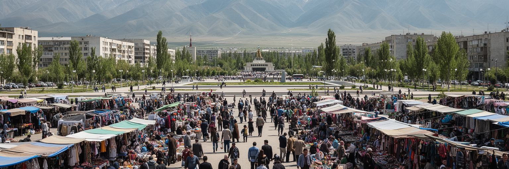
ビシュケクの経済を読むうえで、バザールは欠かせません。オシュ・バザールやドルドイ市場では、食品、衣料、日用品、建材、携帯用品、輸入雑貨が集まり、キルギス国内だけでなく、カザフスタン、ロシア、中国、ウズベキスタン方面の流通ともつながります。ここで働く商人、荷運び、運転手、両替、食堂、修理業者は、公式な企業統計だけでは見えにくい雇用を作っています。バザールは低所得世帯に安い商品を届ける場であり、地方から来た人が商売を始める入口でもあります。一方で、火災、安全、税務、賃料、通関、非公式な支払い、価格変動は大きな負担です。世界市場や為替の変化は、遠いニュースではなく、靴一足、米一袋、子どもの服の値段として店先に現れます。ビシュケクのバザールは混雑した商業空間であると同時に、移民、親族、信用、地域情報が流れる社会空間です。都市の豊かさはショッピングモールだけでなく、こうした市場でどれだけ小さな商売が続けられるかにも支えられます。屋根、排水、保管、消防、交通整理を改善できれば、バザールは非公式性を失わずに、より安全な都市インフラになります。市場の声は首都の実体経済を知らせます。観光客が色彩だけを見て通り過ぎる場所にも、家族の学費、借金、送金、地方の収穫が積み重なっています。首都の商業力は、こうした小さな勘定の集合です。
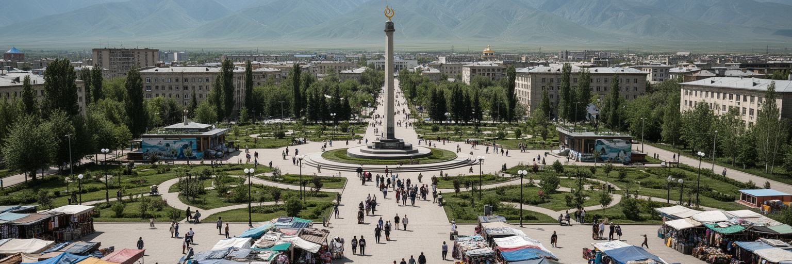
ビシュケクの暮らしは、国内移住と国外出稼ぎに深く結びついています。地方の村や小都市から若者が学業、仕事、結婚、医療、行政手続きのために首都へ来て、ロシア、カザフスタン、トルコ、韓国などで働く家族からの送金が住宅、教育、商売、消費を支えます。街の建設現場、清掃、飲食、配送、小売、家事労働には、地方出身者や帰国移民の経験が入り込みます。送金は家計を助けますが、為替、移民規制、戦争や景気、労働災害、差別に左右されやすく、ビシュケクの消費にも波及します。出稼ぎで親が不在になった家庭、祖父母に育てられる子ども、帰国後に技能を生かせない若者もいます。首都は機会の場所である一方、家賃、登録、学校、医療、言語、非正規労働の壁も高いです。ビシュケクを移民から読むと、都市の成長が国内だけで完結していないことが見えてきます。空港、長距離バス、送金窓口、携帯電話ショップ、郊外の新築住宅は、家族が国境を越えて生活を組み立てる痕跡です。移動する人を一時的な労働力ではなく、市民として支える制度が、首都の安定を左右します。送金の流れは数字であり、同時に家族の時間でもあります。移動の多い社会では、学校や診療所、役所が転入者を受け止める力も重要です。首都で新しく暮らし始める人を排除しないことが、成長の土台になりますね。
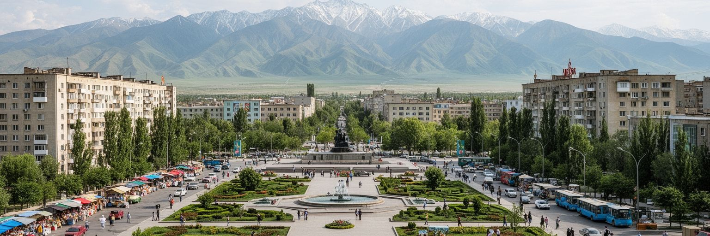
ビシュケクは、旧名フルンゼとして発展したソ連都市の骨格を今も強く残しています。広い大通り、碁盤目の街区、劇場、大学、官庁、集合住宅、中庭、並木、灌漑水路は、計画都市としての秩序を作りました。中心部を歩くと、低層から中層の建物が多く、山への眺めを遮らない水平的な都市景観が続きます。この構造は歩きやすさと緑を生みましたが、自動車増加、駐車、老朽インフラ、暖房設備、耐震性、民営化後の管理不足という課題も抱えています。ソ連期の団地は、単なる古い住宅ではありません。中庭で子どもが遊び、年配者が休み、近所の店が生活を支え、ロシア語文化や多民族の記憶が残る空間です。一方、新しい高層住宅や商業施設は、投資と住まいの選択肢を増やしながら、既存の街路や公共空間に圧力をかけます。ビシュケクを都市計画から読むには、過去を懐かしむだけでなく、古いインフラをどう更新し、緑と山の眺めをどう守り、郊外の成長をどう交通と結ぶかを見る必要があります。ソ連都市の遺産は重荷であると同時に、暑い夏に日陰を作る並木や、公共施設が歩ける距離にある利点でもあります。更新の仕方が都市の品格を決めます。古い公園や文化施設を残しながら新しい建物を加えるには、土地を売る速さより公共空間の質を優先する判断が必要です。街路の余白は貴重な資産です。
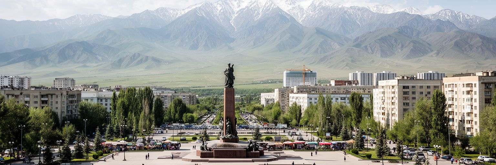
ビシュケクでは、キルギス語とロシア語が日常的に併用されます。国家語としてのキルギス語は独立後のアイデンティティを支え、ロシア語は教育、行政、ビジネス、メディア、移民労働、旧ソ連圏との接続で強い役割を持ち続けています。家庭、学校、職場、役所、タクシー、大学の教室では、相手や場面に応じて言葉が切り替わります。この多言語性は都市の柔軟さである一方、進学、就職、行政アクセスに差を生むこともあります。地方から来た若者は首都でロシア語や専門語に向き合い、ロシア語中心に育った住民は国家語の強化を日常の課題として受け止めます。大学と専門学校は、医療、工学、経済、法律、観光、ITの人材を育て、中央アジア周辺からの学生も引き寄せます。しかし、教育の質、授業料、就職先、海外流出は大きな論点です。ビシュケクを言語から読むと、国づくりと生活の実用性がいつも交渉されていることが分かります。看板の文字、ニュースの言葉、学校で使う教科書、家で話す言葉は、どれも政治的であり、同時にとても個人的です。言語政策が対立ではなく学びの機会を広げる形で進む時、首都は多民族社会の経験を力に変えられます。言葉は都市への入口です。良い教育は、どちらか一つの言語だけを勝たせることではなく、子どもが複数の社会へ参加できる力を与えることです。首都の学校はその実験場です。
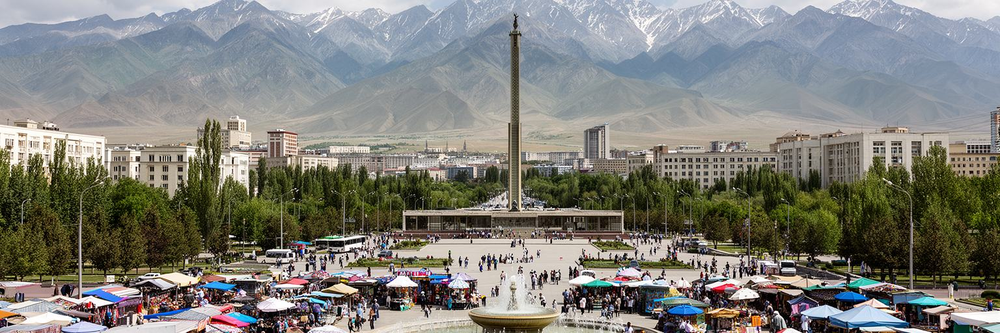
ビシュケクの宗教生活は、イスラムを中心に、ロシア正教、少数のキリスト教諸派、世俗的なソ連文化、家族と地域の習慣が重なっています。モスクの礼拝、ラマダン、結婚式、葬儀、祖先への敬意、正教会の祭礼、公園で過ごす休日は、互いに完全に分かれているわけではありません。多くの住民にとって信仰は、厳密な制度よりも、家族、礼儀、食、衣服、人生儀礼、助け合いの形で現れます。一方で、都市化、若者の宗教意識、海外からの宗教教育、世俗国家としての制度、女性の服装、学校での宗教表現は議論を生みます。ビシュケクでは、ソ連期に作られた公共空間と、独立後に強まった民族的・宗教的自己理解が同じ街路に並びます。信仰をめぐる都市の課題は、過激化対策だけではありません。貧困、孤立、移民家族、教育機会、若者の居場所が弱い時、宗教団体や親族ネットワークが生活の相談先になります。モスクや教会を建物として見るだけでなく、葬儀費用の助け合い、祝日の市場、結婚式場の賑わい、家族の食卓まで見ることで、信仰が都市の安全網として働く様子が分かります。世俗性と信仰の距離を丁寧に調整できるかが、首都の包摂力を試します。公共機関が宗教を恐れるだけでなく、教育、福祉、対話の場を整えるなら、信仰は孤立を減らす力にもなります。多様な祈りが近くにあることは都市の現実です。
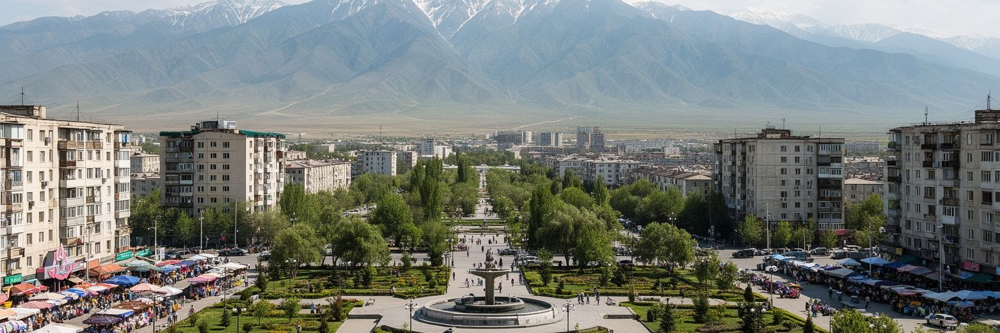
ビシュケクの日常で大きな課題になっているのが、住宅の拡大と冬の空気汚染です。都市の周辺には新しい住宅地が広がり、地方から来た家族や送金で家を建てる世帯が住まいを求めます。しかし、暖房、道路、下水、学校、公共交通が追いつかない地区では、石炭や低品質燃料の使用、自家用車の増加、発電・暖房施設の排出が冬の大気を悪化させます。山に囲まれた地形と寒い季節の逆転層は煙を街に閉じ込め、子ども、高齢者、屋外労働者の健康を脅かします。空気の問題は環境政策だけでなく、貧困、住宅政策、エネルギー価格、公共交通、都市計画の問題です。中心部の団地に住む人、郊外の一戸建てに住む人、通勤で長く車に乗る人では、負担の形が違います。断熱、地域暖房の更新、燃料転換、バスの改善、歩道と自転車環境、学校周辺の安全は、すべて空気をきれいにする政策につながります。ビシュケクの山の眺めは美しいですが、冬にその輪郭が煙でかすむ時、都市成長の費用が見えてきます。住まいを増やすだけではなく、暖かく、健康に、移動しやすく暮らせる都市へ変えることが必要です。空気は誰も避けられない公共財です。見えない汚染は、病院の待合室、学校の欠席、朝の咳として現れます。冬を安全に越せる住宅と交通を整えることは、首都の福祉政策そのものです。毎日の呼吸が都市政策の成績になります。
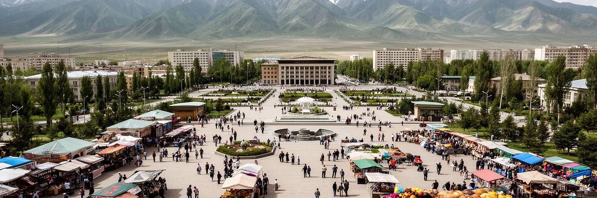
ビシュケクの食文化には、遊牧の記憶、ソ連期の食堂文化、周辺民族との交流、現代のカフェやファストフードが同居しています。ベシュバルマク、ラグマン、マンティ、プロフ、シャシリク、サムサ、クムス、茶は、家庭、祝い事、食堂、バザールのどこでも都市の会話を支えます。肉と小麦、乳製品、野菜、香辛料の組み合わせは、山岳牧畜、オアシス交易、ロシア語圏の食習慣、ウイグルやドゥンガンの料理ともつながります。食堂は労働者、学生、運転手、旅行者が同じ時間を過ごす場所であり、価格は家計と物価を敏感に映します。結婚式や葬儀では料理と客の数が家族の名誉や負担になり、都市生活でも親族関係が強く表れます。若い世代はカフェ、音楽、デザイン、オンライン注文を通じて新しい都市文化を作りますが、バザールで食材を選び、家で茶を出し、来客をもてなす習慣は根強く残ります。ビシュケクを食から読むと、遊牧文化は博物館の展示ではなく、都市の台所と祝宴の作法に生きていることが分かります。食は観光の楽しみであると同時に、農村、畜産、輸入、小商売、家族の義務を結ぶ経済でもあります。皿の上に、山と市場と家族が集まります。外食の広がりは女性の働き方や若者の交流も変えます。小さな食堂や屋台は、低い資本で始められる都市の仕事でもあります。味は生活史を運びます。
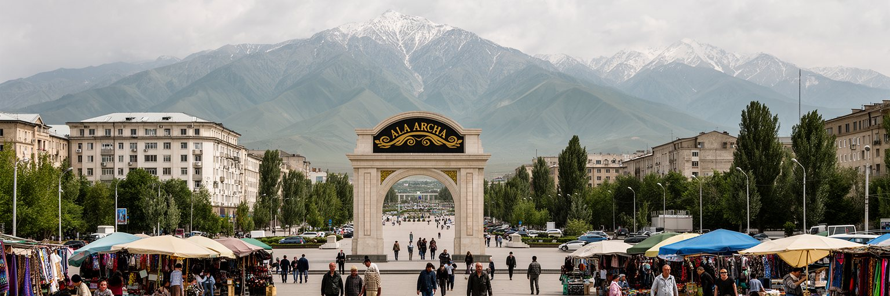
ビシュケクの観光的な強みは、都市と山の近さです。中心部から南へ向かえば、アラ・アルチャ国立公園の谷、氷河を望む登山道、ピクニック、乗馬、冬の雪景色へ短時間で近づけます。旅行者にとっては、アラトー広場、国立歴史博物館、オペラ・バレエ劇場、公園、オシュ・バザールと山岳日帰り旅を組み合わせられるのが魅力です。住民にとっても山は、暑い夏を避け、家族で食事をし、友人と歩き、都市の緊張から離れる身近な場所です。しかし、山岳観光は単純な癒やしではありません。道路混雑、ごみ、登山安全、保護区管理、水源保全、地元ガイドの収入、土地利用の変化を伴います。観光が増えるほど、自然を消費するだけでなく、山が都市へ与えている水、涼しさ、景観、文化的誇りを守る必要があります。ビシュケクを山の入口として読むと、首都の魅力は市内の名所だけでは完結しないことが分かります。都市は山を背景に写真を撮る場所であると同時に、山を管理し、訪問者へ責任ある行動を促す拠点です。ガイド、宿、交通、装備店、カフェ、博物館が連携すれば、観光収入はより広く地域へ回ります。山の近さを日常の財産として守ることが、首都の価値を高めます。安全な登山情報、公共交通、保険、救助体制が整えば、自然へのアクセスはより開かれます。山を近いからこそ軽く扱わない姿勢が必要です。
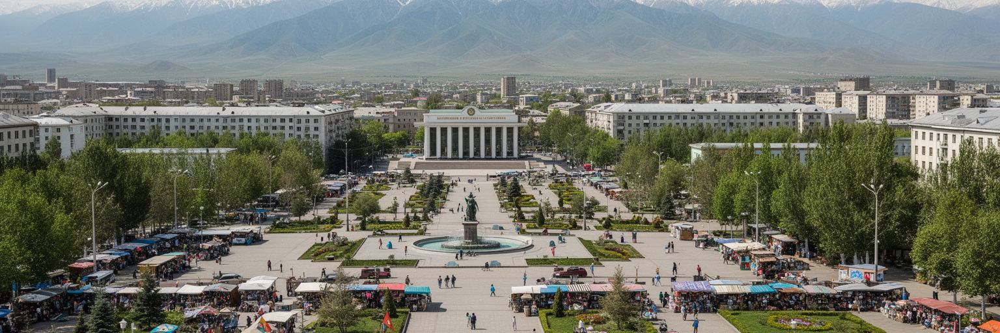
ビシュケクは、巨大な金融都市でも古代遺跡都市でもありません。それでも、キルギスという国を読むための要点が密に集まる首都です。南の山は水と景観と休日を与え、北の国境は物流と移動を開き、中心の広場は政治の変化を受け止め、バザールは国境を越える商流と小さな起業を支えます。ソ連期の街路と団地は公共性の記憶を残し、キルギス語とロシア語は国づくりと実用の間で交渉を続けます。移民と送金は家計を動かし、宗教と親族は生活の安全網になり、冬の空気汚染と郊外化は成長の弱点を示します。食と音楽と茶の時間は、遊牧の記憶を都市の現在に結び、アラ・アルチャへの道は山岳国の観光と環境責任を近づけます。ビシュケクを丁寧に見るには、山の美しさだけでなく、暖房の煙、役所の列、バザールの荷物、大学生の進路、帰国移民の仕事、郊外からの通勤まで含める必要があります。首都の未来は、政治の信頼、空気と水、教育、交通、住宅をどれだけ生活の側から整えられるかにかかっています。山を背にした低層の街は、中央アジアの国家と暮らしがどう折り合うかを静かに示しています。派手な摩天楼が少ないからこそ、並木道、団地の中庭、市場、広場、山への道が都市の本質を見せます。ビシュケクの強さは、国家の中心でありながら生活の距離がまだ近い点にあります。そこに首都の魅力があります。